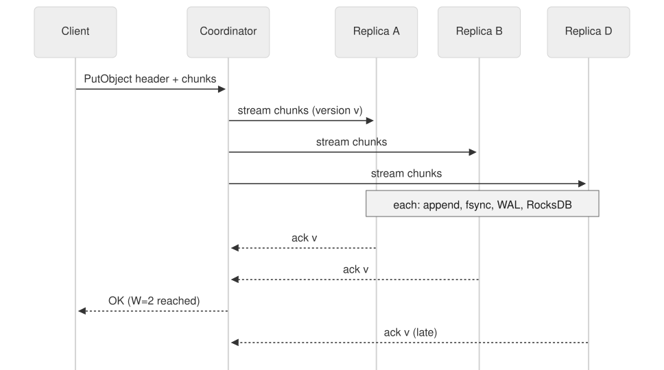
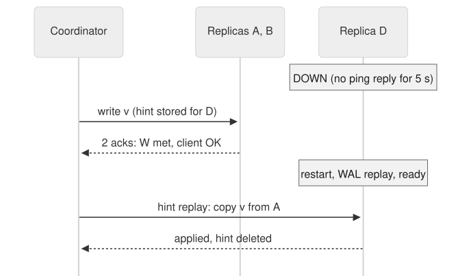

A Dynamo-style, leaderless object store in C++20. Storage nodes talk gRPC, place objects with consistent hashing and virtual nodes, replicate with tunable N/W/R quorums, verify every chunk with CRC32C, survive crashes with a write-ahead log, keep metadata in RocksDB and repair replicas in the background. Everything you need for a 30–45 minute interview.
Resume bullets this booklet defends
What it does. It stores files ("objects") such as images, model files, logs and backups across several machines. A client calls PutObject( to store an object and GetObject( to read it back. Behind that simple API, the system decides which machines hold the object, keeps three copies, checks every byte for corruption, and keeps working when a machine dies.
The problem it solves. A single disk is a single point of failure: when it dies, the data and the service go with it. Copying files around by hand gives no integrity guarantee and no automatic recovery. Real object stores (Amazon S3, Google Cloud Storage) and databases such as Dynamo, Cassandra and Riak solve this with a small set of ideas: spread data with a hash ring, replicate it, use quorums to stay available, log writes before applying them, checksum everything, and repair replicas in the background. This project implements those ideas end to end.
Who would use it. Backend services that need to store blobs (user uploads, ML model artifacts, backups) and want durability and availability without a central metadata server.
What happens without it. One machine failure means lost data or downtime; silent bit rot goes unnoticed until a user downloads a corrupted file; adding a server means manually reshuffling data.
What makes it technically interesting. There is no master. Any node can coordinate any request, every node computes placement on its own, replicas can temporarily disagree, and the system still converges. It touches distributed systems (hashing, quorums, repair), storage engines (WAL, fsync, append-only files, RocksDB) and high-concurrency C++ I/O in one project.
Imagine a library with five branches and no head office. Every book's title is turned into a number on a circular dial; the three branches clockwise from that number keep a copy. Any branch can take your request and phone the three owners. A book counts as safely shelved once two of the three confirm it is on the shelf. If one branch is closed, the others leave a note ("give them a copy when they reopen"), and once in a while branches compare inventories to catch anything the notes missed.
A client uploads photos/cat.jpg (2.5 MiB). The node it reaches hashes the key onto the ring and finds its three replicas: nodes 2, 3 and 4. It streams three chunks (1 MiB, 1 MiB, 0.5 MiB), each with a CRC32C checksum, to all three. Nodes 2 and 3 write the data, make it durable with their WALs and acknowledge; the client gets OK after those two acknowledgements. Node 4 acknowledges a few milliseconds later. If node 4 had been down, the coordinator would store a hint and copy the object to node 4 when it returns.
Scope boundary. Not S3-compatible, not a file system, no multipart upload, no erasure coding, no cross-region replication, no linearizable consistency, no automatic large-scale rebalancing. Default cluster: 5 nodes, N=3, W=2, R=2.
| Resume bullet | Concepts you must be able to explain |
|---|---|
| 1. Storage nodes using gRPC, consistent hashing and configurable replication, checksum integrity, concurrent I/O | Object storage, gRPC, consistent hashing, virtual nodes, replication factor N, quorums, leaderless design, CRC32C, concurrent I/O |
| 2. Write-ahead logging, async replica repair, concurrent I/O, recovery from node failures with availability | WAL and crash recovery, group commit, RocksDB metadata, append-only segments, hinted handoff, read repair, anti-entropy |
| 3. 1,000 concurrent requests, 10K ops/min, < 200 ms p95, ~25% lower CPU | Benchmark metrics, Little's law, CPU per operation |
.proto files and code is generated for client and server. gRPC runs on HTTP/2, which multiplexes many calls over one connection, supports streaming RPCs (a Put is a client stream of chunks, a Get is a server stream), carries deadlines and status codes, and applies flow control (backpressure).ObjectStore (Put, Get, Head, Delete, List) and internal ReplicaService (replica writes and reads, repair digests, ping). The C++ callback API keeps threads from blocking.hash(key) % nodes, changing the node count remaps almost every key.1/nodes of the data.hash(node_name + "#" + i) ), so 5 nodes give 640 points. With one token per node, arcs are uneven and one node could own far more than its share; with many tokens, per-node load deviation shrinks roughly with 1/sqrt(vnodes).R + W > N, every read set overlaps every successful write set in at least one replica, so a read after a successful write sees it (absent a newer concurrent write). Default N=3, W=2, R=2. Write latency is the W-th fastest replica; read latency the R-th fastest. Consistency is per request: ONE, QUORUM or ALL.(hybrid logical clock timestamp, node id) . An HLC stays close to wall-clock time but never goes backwards and advances when nodes see each other's timestamps. Every replica applies a version only if it is greater than the one it holds: last-writer-wins (LWW). The node id breaks ties.1 − 2^-32. It is not cryptographic and does not stop deliberate tampering.DATA_LOSS, the read switches to another replica, and repair rewrites the bad copy.fdatasync the chunk data; append a PUT_COMMIT record (key, version, chunk locations, CRC) to the WAL and fdatasync it; apply metadata to RocksDB; acknowledge. The WAL record is the single commit point. On restart the node replays WAL records after applied_lsn (stored in RocksDB), verifying each record and the chunks it references; a torn final record is truncated because it was never acknowledged.disableWAL=true) because this WAL covers both stores; atomic_flush plus an applied_lsn stored in every batch keeps RocksDB consistent. The WAL is truncated after each RocksDB flush, which bounds recovery time.fdatasync has a fixed cost (often milliseconds on cloud disks). One committer thread gathers up to 256 pending commits or waits up to 2 ms, then performs one fdatasync for the touched segments, one WAL append and one WAL fdatasync, applies the batch to RocksDB and completes every waiting write. Amortised flush cost per write = flush latency / batch size.WriteBatch and column families.fetch_add on the file's tail offset, then writes with pwrite at that offset, so many threads write in parallel without a lock. Each record has a self-describing header (key hash, version, chunk index, CRCs). Full segments are sealed; a compactor later copies live records out of mostly-dead segments.open, write, fsync, close and a directory fsync per chunk, plus inode churn; appends to a few open files are cheaper and let one flush cover many chunks.pwrite but before commit leaves unreferenced bytes; they are harmless garbage because no committed metadata points to them.pread/pwrite; one group-commit thread for durability; lock-free offset reservation for appends; 1,024 striped locks only for the metadata read-compare-write; admission control capping in-flight requests per node at 512; and end-to-end backpressure through gRPC flow control (a slow replica slows the coordinator's reads from the client).fdatasync. Overload becomes fast RESOURCE_EXHAUSTED errors that clients retry with backoff, instead of unbounded queues.Say these precisely. (1) "Benchmarked 1,000 concurrent requests … achieving" reads like a measured result; all four numbers are benchmark targets with a written method, and "1,000" means concurrent client sessions, not 1,000 requests executing at once. (2) "Maintaining availability" holds when at most one replica of a key is down (N=3, W=2); with two down, quorum writes to those keys fail. (3) If you say "hinted handoff", add that it is a strict-quorum variant with hints held by the coordinator, not Dynamo's sloppy quorum. (4) "Concurrent I/O" appears in two bullets; have one concrete answer ready (callback gRPC, bounded I/O pool, lock-free appends, group commit, admission control).
| Technology | Purpose in the project | Why it was selected |
|---|---|---|
| C++20 | Storage-node binary, client library, load generator | Explicit control of threads, buffers and syscalls, which is exactly what the CPU optimisation measures |
| gRPC + Protocol Buffers | Client API and node-to-node replication, repair and heartbeats | HTTP/2 multiplexing, streaming RPCs, deadlines, flow control, code generation |
| RocksDB | Per-node metadata: latest versions, ring index, hints, segment state | Embedded, atomic batches, ordered iteration, fast point lookups |
| Append-only segment files | Chunk data | Few syscalls and fsyncs; sequential writes; no LSM write amplification for large values |
| CRC32C (Abseil) | Chunk, object, WAL and record checksums | Hardware-accelerated, industry standard for storage integrity |
| xxHash64 | Ring positions for keys and virtual nodes | Fast, uniform, non-cryptographic |
| Docker + Kubernetes StatefulSet | Packaging; 5 pods with stable names and their own persistent volumes | Storage nodes need stable identity and their own disk after rescheduling |
| Prometheus metrics (auxiliary) | Latency histograms, repair queues, CPU | Observability; not a resume technology |
How they work together. A client's gRPC stream reaches any node. That node uses xxHash64 and the ring to find the three owners, forwards chunks over internal gRPC streams, and each owner writes chunks into its segment files, commits through its WAL (with group commit) and records metadata in RocksDB. CRC32C is checked at every hop. Kubernetes gives each node a stable DNS name (storage-node-0..4) and its own disk, which is what the ring and the WAL depend on.
In simple words. Every node runs the same program and plays two roles. As a coordinator, it accepts a client request, works out which three nodes own the key, sends the request to them, waits for enough answers (the quorum) and replies. As a replica, it stores its copy durably and serves reads. There is no master, no metadata server and no ZooKeeper. Background repair keeps replicas in sync.

Component responsibilities
| Component | Responsibility |
|---|---|
| gRPC server | Hosts ObjectStore (clients) and ReplicaService (peers) on one port; callback reactors |
| Coordinator | Version assignment (HLC), preference list, quorum fan-out and wait, read resolution, hint creation, read-repair scheduling |
| Ring manager | Builds an immutable ring snapshot from the node list, 128 vnodes per node and the ring epoch |
| Failure detector | Pings peers every 1 s; SUSPECT after 3 s and DOWN after 5 s without reply |
| LocalStore | Facade for local persistence: segment appends, commit, reads, tombstones |
| WAL + group committer | Durable commit log; batches commits and flushes once per batch |
| RocksDB metadata | Latest version per key, ring-ordered index, hints, segment accounting, applied_lsn |
| Repair manager | Replays hints, executes read repairs, runs anti-entropy, rate-limited |
| Scrubber / compactor | Re-verifies sealed segments; reclaims space from mostly-dead segments |
| Admission controller + I/O pool | Caps in-flight requests (512) and runs blocking disk I/O on 8 threads |
How components communicate. Client to any node: gRPC ObjectStore over HTTP/2, synchronous (the client waits for the quorum); Put is a client stream of chunks, Get a server stream. Coordinator to replicas: gRPC ReplicaService streams, synchronous until W acknowledgements, then asynchronous for the rest. Node to node heartbeats: unary Ping every second with a 500 ms deadline. Repair: background RPCs (ReplicaReadChunks, ReplicaWrite, RangeDigest, RangeKeys), rate-limited. Disk I/O happens only on I/O threads, never on gRPC callback threads. When the coordinator is itself a replica, it calls LocalStore directly.
Complete data flow.

Where data is stored. Chunk bytes: 1 GiB append-only segment files on each replica's persistent volume. Metadata: RocksDB on the same volume. Commit log: WAL segments of 64 MiB, truncated after RocksDB flushes. Hints: the coordinator's RocksDB. The ring is not stored; every node computes it from configuration. There is no global metadata store; metadata is replicated with the data by the same quorum write.
How it scales.
consistency=ONE to spread load.What happens when a major component fails
| Failure (N=3, W=2, R=2) | Effect | Recovery |
|---|---|---|
| One replica of a key down | Reads and writes still succeed; hints queue for it | Node returns → WAL replay → hint replay → anti-entropy |
| Two replicas of a key down | Quorum operations fail with UNAVAILABLE; ONE reads still work |
Bring a node back |
| Node crash and restart | Same disk; WAL replay restores metadata | Automatic; hints and anti-entropy fill the gap |
| Corrupt chunk on disk | CRC mismatch → DATA_LOSS → read served from another replica |
Repair rewrites the bad copy |
| Disk permanently lost | Node replaced with an empty volume | Anti-entropy rebuilds its ranges at ≤ 50 MiB/s |
| Coordinator dies mid-request | Client stream breaks; client retries on another node | Puts have unknown outcome; retry writes a newer version |
1. Leaderless quorum replication instead of a leader per shard. Chosen: Dynamo-style N/W/R quorums, any node coordinates. Why: no leader election or failover logic, availability with a replica down, tunable per request. Alternative: primary-backup or Raft per shard. Why not: needs leader election, failover and a replicated log; more work, less availability during leader changes. Trade-off: not linearizable; failed writes have unknown outcome.
2. Last-writer-wins with hybrid logical clock versions.
Chosen: versions (HLC, node id), apply only if newer. Why: deterministic convergence, 12 bytes of metadata, idempotent apply. Alternative: vector clocks with siblings. Why not: clients would have to merge conflicting blobs, which makes little sense for immutable objects. Trade-off: one of two concurrent writes is silently lost; clock skew can favour the faster clock.
3. Consistent hashing with 128 virtual nodes. Chosen: xxHash64 ring, preference list of N distinct nodes. Why: no directory service; minimal movement on membership change; even load. Alternative: modulo hashing, rendezvous hashing or a central placement table. Why not: modulo reshuffles almost everything; a directory is a new single point of failure. Trade-off: balance is statistical; the ring must match everywhere (epoch).
4. Strict quorum with coordinator-held hints. Chosen: only the N owners count; hints stored at the coordinator. Why: data only ever lives on its owners, so repair stays simple. Alternative: sloppy quorum writing to a substitute node. Why not: more availability but data on non-owners complicates repair and consistency. Trade-off: two owners down blocks writes for those keys.
5. Own WAL with group commit; RocksDB for metadata only; segments for data. Chosen: one commit record spanning data and metadata, RocksDB WAL disabled. Why: a single commit point and amortised fsync. Alternative: fsync per write, RocksDB's WAL as the commit point, or blobs inside RocksDB. Why not: per-write fsync is slow; RocksDB's WAL does not cover segment data; large values in an LSM tree cause heavy write amplification. Trade-off: custom replay code must be tested at crash points.
6. Callback gRPC with a bounded I/O pool and admission control. Chosen: non-blocking reactors, 8 I/O threads, 512 in-flight cap. Why: thread count independent of client count; overload becomes fast errors. Alternative: synchronous thread-per-RPC server. Why not: hundreds of threads under 1,000 sessions. Trade-off: reactor code is harder to write.
A client uploads photos/cat.jpg with the default QUORUM consistency.

PutObject stream to any node through the Kubernetes Service (or directly). That node is the coordinator.RESOURCE_EXHAUSTED ); a bearer token is checked; the first message must be a valid header (bucket, key, size, object CRC).DOWN get a hint immediately. If fewer than W replicas are alive, it fails fast with UNAVAILABLE before sending any data.pwrite, and after the last chunk verifies the whole-object CRC and submits a commit.fdatasync the segments, append the WAL record, fdatasync the WAL, apply the metadata to RocksDB under a per-key lock (only if the version is newer). Then the replica acknowledges.OK(version, crc) to the client.The read path (GetObject) in brief. The coordinator sends metadata reads to all live replicas, waits for the first R=2, chooses the highest version (a tombstone means NOT_FOUND), then streams chunks from one replica holding that version, verifying each CRC. If a chunk fails its CRC, it continues from that chunk on another replica. Any replica that answered with an older version is queued for read repair.
Scenario A: One replica is down during a Put. Figure 4 shows the timeline.

The client never sees the failure. Durability is temporarily two copies instead of three; a second failure among the same key's replicas would block writes to that key until a node returns.
Scenario B: A chunk is corrupt on disk. A replica's disk flips a bit in a sealed segment. On the next read (or scrubber pass), the stored CRC does not match, so the replica returns DATA_LOSS for that chunk. The coordinator continues the same stream from that chunk index on another replica holding the same version, so the client receives a complete, verified object. The repair manager then rewrites a fresh copy onto the bad replica and the corrupt record is marked dead.
Scenario C: A node crashes and restarts. Peers stop getting ping replies and mark it DOWN within ~5 s; writes for its keys go to the other two replicas plus hints. Kubernetes restarts the pod with the same persistent volume. Recovery: open RocksDB and read applied_lsn; replay WAL records after it, checking each record's CRC and that the chunks it references exist; truncate a torn final record (it was never acknowledged); find each active segment's valid tail and resume appending after it; flush RocksDB. The node reports ready, peers replay hints, and anti-entropy confirms convergence. Recovery time is bounded by the WAL tail since the last flush (illustratively, a few seconds).
| Guarantee | Holds? | Condition / reason |
|---|---|---|
| Acknowledged write is durable | Yes | On ≥ W replicas, fsynced before ack; survives any number of process crashes and up to W−1 disk losses before repair |
| Read-your-writes | Yes, conditionally | Same key, R + W > N, write returned OK, no concurrent writer |
| Linearizability | No | Leaderless quorums with LWW are not linearizable |
| Monotonic reads | No (in general) | Two reads via different coordinators can hit different quorums; read repair shortens regressions |
| Eventual consistency | Yes | Replicas converge after repair if writes stop |
| Failed write has no effect | No | "Unknown outcome": a failed Put may have committed on fewer than W replicas and appear later |
| No corrupt data returned silently | Yes | CRC checked at every hop; mismatches become errors and repairs |
| Concurrent writes both kept | No | LWW keeps one |
Where consistency comes from: deterministic placement (same ring everywhere, guarded by epoch), deterministic conflict resolution (total order on versions) and idempotent apply ("apply only if newer"). Together they make each key behave like a last-writer-wins register: replicas can apply updates in any order, any number of times, and still converge. Failures are handled by quorums (stay available), hints, read repair and anti-entropy (converge), WAL replay (recover locally) and CRCs (detect corruption). Accepted trade-offs: no linearizability, silent loss of concurrent writes, unknown outcomes on failed writes, manual topology changes.
"I built a distributed object store in C++, in the style of Amazon's Dynamo. The problem is storing blobs like images or model files across machines so that losing one machine loses nothing and doesn't stop service.
Every node runs the same gRPC server and there's no master. When a request arrives, the node it lands on becomes the coordinator: it hashes the key onto a consistent-hash ring with 128 virtual nodes per server and takes the first three distinct servers clockwise as replicas. A write streams 1 MB chunks, each with a CRC32C checksum, to all three in parallel, and succeeds once two of them have made it durable. A read asks the replicas for metadata, takes the newest version from the first two answers, and streams the data from one of them, verifying checksums.
On each node, data goes into append-only segment files, a write-ahead log with group commit is the commit point, and RocksDB holds metadata, so a crash never loses an acknowledged write. If a replica is down, the coordinator stores a hint and replays it later; reads repair stale copies; and a periodic anti-entropy process compares replicas and fixes anything else.
The benchmark target was 10K operations a minute at under 200 ms p95 with 1,000 client sessions, and about 25% less CPU per operation after the I/O optimisations. Those are targets with a documented method, not production measurements."
"Problem and requirements. I wanted a storage engine that keeps objects durable and available across node failures without a central metadata server. Requirements: put, get, head, delete; N copies with configurable read and write quorums; integrity checks on every byte; crash recovery; background repair; and safe handling of many concurrent clients.
Technology. C++ for explicit control over threads, buffers and syscalls; gRPC for streaming RPCs with deadlines and flow control; RocksDB as an embedded metadata store; CRC32C for hardware-fast checksums; and Kubernetes StatefulSets, because storage nodes need stable names and their own disks.
Architecture. [Draw Figure 2.] Five identical nodes. Each is both a coordinator for requests it receives and a replica for keys it owns. Placement uses consistent hashing with 128 virtual nodes per server, so adding a node moves only about a fifth of the data and a failed node's load spreads across all survivors. Every node computes the same ring, so there's no lookup service.
Write path. The coordinator assigns a version from a hybrid logical clock, streams chunks to all three replicas and replies after two durable acknowledgements. On each replica the order matters: write chunk data and fsync, append a commit record to the WAL and fsync, then update RocksDB, then acknowledge. Group commit batches many writes into one fsync.
Read path. Ask all live replicas for metadata, use the first two, pick the highest version, stream from one replica, verify every chunk.
Key decisions. Leaderless quorums instead of a leader per shard, because there's no election or failover and it stays available with one replica down. Last-writer-wins with HLC versions, so replicas converge without coordination; the trade-off is that concurrent writes to one key keep only one. My own WAL instead of RocksDB's, because a write spans the data files and the metadata, and I need one commit point for both.
Reliability. Hints for missed writes, read repair for stale replicas, anti-entropy every ten minutes, WAL replay on restart, and checksums checked at every hop with a background scrubber.
Performance. The I/O optimisations were append-only segments instead of a file per chunk, group commit with a single WAL, and avoiding buffer copies. The resume's 10K ops/min, sub-200 ms p95 and 25% CPU figures are benchmark targets I designed for."
"Motivation. I wanted one project that exercises the core ideas behind Dynamo, Cassandra and object stores, in C++ so the costs I'm optimising, syscalls, copies and threads, are visible.
Architecture. [Draw Figure 2.] Five nodes on Kubernetes as a StatefulSet, so each pod keeps its name and its persistent volume across restarts. A client can hit any node through a Service. There's no master and no ZooKeeper: the ring comes from a static node list plus an epoch number, and liveness comes from one-second heartbeats.
Placement. Keys and 128 tokens per node are hashed onto a 64-bit ring; a key's preference list is the first three distinct physical nodes clockwise. Virtual nodes balance ownership and spread a dead node's load. An epoch stamped on every write rejects nodes with a stale ring.
Quorums. N=3, W=2, R=2. Because R plus W is greater than N, any read set overlaps any successful write set, so you read your own write. But I'm careful to say this is not linearizable: concurrent reads and writes can see old, then new, then old. And a failed write has an unknown outcome, because it might have landed on one replica and later spread through repair. So clients treat errors as 'unknown' and retry, which is safe because a retry just writes a newer version with the same bytes.
Conflict resolution. Each write gets a version: a hybrid logical clock timestamp plus the node id. Every replica applies a version only if it's newer than what it has. That one rule makes client retries, hint replays, read repairs and WAL replays all idempotent, and every replica converges on the same winner. The cost is last-writer-wins: two concurrent writers to one key lose one write silently, and clock skew can favour the node with the faster clock.
Node internals. Chunk bytes go into big append-only segment files. A writer reserves space with an atomic fetch-add on the tail and writes with pwrite, so there's no lock on the data path. Metadata goes into RocksDB, which is great for small records and ordered scans but bad for multi-megabyte values because compaction would keep rewriting them. The WAL ties them together: fsync the data, append and fsync a commit record, then apply to RocksDB. I disabled RocksDB's own WAL because mine covers both stores, and I store an applied-LSN in every RocksDB batch so recovery knows where to start replaying. Group commit means one fsync covers up to 256 writes.
Integrity. CRC32C is computed by the client per chunk and verified at every hop and by a background scrubber. A mismatch becomes DATA_LOSS, the read continues from another replica, and repair rewrites the bad copy.
Failures. If a replica is down, writes still meet W=2 and the coordinator stores a hint, replayed every ten seconds once the node is back, rate-limited so repair doesn't hurt foreground latency. Reads that notice a stale replica trigger read repair. Anti-entropy compares 64 bucket digests per range every ten minutes and catches anything the others missed, including a node whose disk was replaced. Deletes are tombstones kept for 24 hours so anti-entropy can't resurrect them. On restart a node replays its WAL tail, truncates any torn record, and rejoins.
Concurrency. Callback reactors never block; disk I/O runs on an eight-thread pool, durability on one committer thread, and admission control caps 512 in-flight requests per node. No lock is held across a network call or an fsync.
Performance and numbers. The baseline wrote one file per chunk with an fsync each, used RocksDB's WAL as well as mine, copied buffers on every read and re-serialised chunks per replica. The optimised path removes each of those, which should cut CPU per operation by about a quarter. I'd measure CPU per op from cgroup counters at the same offered load, with an ablation per change. The load generator runs 1,000 client sessions with open-loop arrivals at 167 ops per second; by Little's law only a handful are actually in flight, which I'd say openly. All of the numbers are targets.
Limitations and next steps. No linearizability or conditional writes, manual topology changes, strict quorums block writes when two replicas are down, full-mesh heartbeats don't scale past a few dozen nodes, and three full copies cost 3× storage. Next I'd add Merkle trees or incremental digests, SWIM gossip, zone-aware placement, erasure coding for cold data and Raft-replicated metadata for keys that need compare-and-swap."
It stores objects (blobs of bytes up to 64 MiB) under a bucket and key, across a cluster of storage nodes, and keeps them durable and available when nodes fail. Clients call PutObject, GetObject, HeadObject and DeleteObject over gRPC. Any node can coordinate a request: it finds the key's three replicas on a consistent-hash ring, writes to them in parallel and replies after two have durably stored the data (W=2), or reads metadata from replicas and returns the newest version (R=2). Each node makes writes crash-safe with a write-ahead log, stores metadata in RocksDB and data in append-only segment files, and checks CRC32C checksums everywhere. Background repair (hints, read repair, anti-entropy) brings lagging replicas back in sync. It is a Dynamo-style, leaderless design, not S3-compatible and not a file system.
An object store saves whole blobs under a flat key and returns them whole (put, get, head, delete, list); an overwrite creates a new immutable version. A file system adds directories, partial writes, appends, renames and POSIX semantics, which are much harder to distribute. A database adds queries, indexes and often multi-key transactions. Object stores give those up for easy scaling: because an object is written once as a unit, copying a version to another node is always safe and conflicts reduce to "which version is newest". This project follows that model: 1 MiB chunks, immutable versions, tombstones for deletes, garbage collection of superseded chunks.
The client streams a header and 1 MiB chunks to any node, which becomes the coordinator. It checks admission (≤ 512 in flight) and the header, hashes the key onto the ring to find three replicas, and stamps a version from its hybrid logical clock. It streams each chunk, after verifying its CRC32C, to all three replicas. Each replica verifies the CRC, appends the chunk to a segment file, and after the last chunk submits a commit. A group-commit thread flushes the data, appends a commit record to the WAL, flushes the WAL and updates RocksDB, then the replica acknowledges. After two acknowledgements the coordinator replies OK with the version. The third replica's acknowledgement arrives in the background; if it fails, the coordinator stores a hint to repair it later.
Related follow-up: "Why wait for two, not three?" Waiting for all three blocks on the slowest or a dead replica; two of three keeps writes available with one node down.
The coordinator sends a lightweight metadata read to all live replicas and resolves at the first R=2 answers: highest version wins; a tombstone or nothing means NOT_FOUND. It then streams chunks from one replica holding that version (itself if possible), verifying each CRC; the client verifies chunks and the object CRC. A failed chunk continues from the same index on another replica. Replicas that returned older versions are queued for read repair. Asking all replicas but waiting for two cuts tail latency for a few extra metadata reads.
hash(key) % number_of_nodes ?EasyWith modulo hashing, the node for a key depends on the node count, so going from 5 to 6 nodes changes the owner of roughly 5 in 6 keys and you must copy almost all the data. Consistent hashing places both nodes and keys on the same circular hash space; a key belongs to the next nodes clockwise. Adding a node only takes over the arcs just before its positions, about 1/(nodes+1) of the keys; removing one hands its arcs to neighbours. Every node can compute placement locally with a binary search over the sorted ring, so no central directory is needed. Here the ring uses xxHash64 and 128 virtual nodes per server, and the preference list is the first three distinct physical servers clockwise. An epoch number in every write stops a node with an outdated ring from writing to the wrong replicas.
Related follow-up: "Alternatives?" Rendezvous (highest-random-weight) hashing, jump consistent hash, or a placement directory.
With one position per server on the ring, the arcs between servers are random lengths, so one server can own far more keys than another, and when a server dies, its whole arc falls on a single neighbour, doubling that neighbour's load. Virtual nodes give each physical server many positions (128 here, so 640 in a five-node cluster). Each server then owns many small arcs, and the law of large numbers evens out the total: imbalance shrinks roughly with one over the square root of the vnode count. When a server fails, its many small arcs are inherited by many different neighbours, spreading the extra load across all survivors. The preference list skips additional tokens of a node that is already selected, so three replicas always land on three different machines. The cost is a larger ring structure and more ranges to compare during anti-entropy.
N is how many replicas store each object (3). W is how many must acknowledge a write before it counts as successful (2). R is how many replicas a read consults before answering (2). If R + W > N, any set of R replicas must overlap any set of W replicas in at least one node, by simple counting: 2 + 2 = 4 > 3. So a read that follows a successful write always includes at least one replica that has the write, and because the read takes the highest version, it returns that write (unless a newer write has happened). Tuning changes the trade-off: W=3, R=1 gives fast reads but any replica failure blocks writes; W=1, R=1 is highly available but only eventually consistent and risks losing a write if that one replica dies before repair. Consistency is selectable per request: ONE, QUORUM, ALL.
Three reasons: streaming, efficiency and built-in reliability features. Objects can be 64 MiB, so a Put is a client-streaming RPC (a header, then 1 MiB chunks) and a Get is a server-streaming RPC; HTTP/2 flow control gives backpressure automatically, so a slow replica slows the sender instead of exhausting memory. Protocol Buffers are compact binary messages with generated C++ code for both the client-facing ObjectStore service and the internal ReplicaService. gRPC also provides deadlines that propagate to downstream calls, standard status codes (UNAVAILABLE, DEADLINE_EXCEEDED, DATA_LOSS, RESOURCE_), connection multiplexing (many calls on one connection) and keepalives. The C++ callback API lets a few threads serve many concurrent streams. Raw TCP would require building framing, flow control and deadline propagation by hand; REST/JSON would add parsing cost and lack native streaming backpressure.
A WAL is an append-only file where you durably record that an operation committed, before (or while) applying it to your main data structures, so a crash can never leave you in a half-updated state. Here a Put touches two places: chunk bytes in segment files and metadata in RocksDB. Without a single commit point, a crash between them could leave metadata pointing at missing data, or data that nothing points to, or an acknowledged write that vanished. The replica therefore fsyncs the chunk data, appends a PUT_COMMIT record (key, version, size, checksum, chunk locations) to the WAL and fsyncs it, then updates RocksDB, and only then acknowledges. On restart it replays every WAL record after the last applied sequence number. Anything acknowledged is in the WAL; anything not in the WAL was never acknowledged.
Related follow-up: "Doesn't the WAL slow writes?" Group commit amortises the flush across many writes (Q21).
Data can be silently corrupted in a disk sector, in RAM or in a network buffer, and neither TCP's checksum nor disk ECC catches every case. CRC32C is a 32-bit checksum that is hardware-accelerated on modern CPUs (around 10 GB/s per core), detects all single-bit and short burst errors and random corruption with very high probability, and is the industry standard in storage (Google Cloud Storage, iSCSI, ext4 metadata). The client computes one CRC per chunk and one for the whole object, and the checksum is verified end to end: by the coordinator on receipt, by each replica before writing, by the replica on every read, by the client on download, and by a background scrubber over sealed segments. WAL records and segment headers carry their own CRCs to detect torn writes. It is not a cryptographic hash, so it protects against accidents, not attackers.
Metadata (latest version, size, chunk locations, checksums) is small, read on every request, and needs atomic multi-key updates and ordered iteration for listing and range digests. RocksDB is an embedded LSM-tree key-value store that provides exactly that: point lookups with bloom filters, a block cache, atomic WriteBatch and column families, without a network hop or a separate server. Object data is the opposite: large, immutable and read sequentially. In an LSM tree, values are rewritten every time compaction merges files, so storing megabyte chunks there would multiply disk writes by ten or more. Data therefore goes into append-only segment files, and RocksDB stores only ( pointers. RocksDB's own WAL is disabled, because the project's WAL is the commit point for both stores.
When a replica is down, slow or erroring, the coordinator still completes the write if W replicas acknowledge, and records a durable hint in its own RocksDB: "node X should have key K at version ≥ v". Every 10 seconds a repair loop copies that version from a healthy replica to each target that is back up and deletes the hint, retrying with backoff; repair traffic is capped at 50 MiB/s to protect foreground latency. Because applying a version is idempotent ("only if newer"), a replay racing a normal write is harmless. Precision: Dynamo's original hinted handoff writes data to a substitute node (sloppy quorum); here the quorum is strict, data never lives on a non-owner, and the hint sits at the coordinator.
Related follow-up: "What if hints are lost?" Anti-entropy still finds the gap on its next cycle.
Both fix lagging replicas but find problems differently. Read repair is opportunistic: during a Get, if one replica returns an older or missing version, the coordinator serves the newest and schedules a background write to the stale replica; it fixes only keys being read. Anti-entropy is systematic: every 10 minutes per vnode range, two replicas compare 64 bucket digests (XOR of hashes of key, version, tombstone); for mismatched buckets they exchange key lists and copy the newer side. It catches everything, including unread keys, lost hints and rebuilt empty disks. Merkle trees need fewer exchanges at huge scale; bucketed digests are simpler at millions of keys per node.
Peers ping every second and mark a node DOWN after 5 s; failed RPCs and Kubernetes readiness also notice. If it was coordinating a request, the client's stream breaks and the client retries elsewhere. If it was a replica, writes still meet W=2 with the other two and coordinators store hints; reads use the remaining two. Affected keys temporarily have two copies. On restart with the same volume, the node replays its WAL, truncates a torn tail, finds segment ends and rejoins; hints and anti-entropy fill gaps (Scenario C). If the disk is lost, a fresh node starts empty and anti-entropy streams all its ranges from peers, rate-limited.
There is no primary replica for a key: all replicas accept writes, any node can coordinate, and consistency comes from quorums plus a deterministic conflict rule instead of a leader ordering writes. Benefits: no leader election, no failover pause, writes continue with a replica down. Implications: eventual consistency with tunable strength. With R + W > N you get read-your-writes after a successful write, but not linearizability or monotonic reads across coordinators; concurrent writes are settled by last-writer-wins (one is lost); and a failed write may still partially apply. Amazon's Dynamo, Cassandra and Riak make the same trade-off; systems that need strict ordering, such as compare-and-swap, use leader-based consensus like Raft (Q28).
Many reads and writes hit disks and network at once, safely and with bounded resources. Concretely: callback gRPC (no thread per request); blocking pread/pwrite on a fixed 8-thread I/O pool; one group-commit thread batching flushes; parallel appends to one segment file, each writer reserving its own byte range with an atomic fetch_add and writing with positional pwrite; a short striped per-key lock only for the metadata version compare; admission control at 512 in-flight requests per node. Concurrent writes to one key are resolved by version, not by cross-node locks, and no lock is held across a network call or an fsync. In bullet 2 the same machinery also lets repair and recovery writes run alongside live traffic.
Consistency: not linearizable, no compare-and-swap, last-writer-wins can lose concurrent writes, failed writes have unknown outcomes. Availability: two replicas down blocks writes for those keys. Scale: full-mesh heartbeats and full-range anti-entropy suit about eight nodes; topology changes are manual. Efficiency: 3× storage; 4 KiB alignment wastes space on tiny objects; non-replica coordinators add a hop. Security: static tokens, TLS off by default, no encryption at rest. Improvements: Merkle trees and SWIM gossip, a ring-change planner, zone-aware placement, erasure coding for cold data, replica-aware client routing, mTLS, Raft-replicated metadata for conditional writes, and running the benchmark to replace targets with measurements.
Every write gets a version from the coordinator: a hybrid logical clock (HLC) timestamp plus the coordinator's node id as a tie-breaker. An HLC is max( with a counter, so it stays near real time, never runs backwards, and moves forward when nodes exchange timestamps in pings and write headers. Every replica applies an incoming version only if it is greater than the stored one, holding a per-key striped lock during that read-compare-write. Because all replicas use the same total order, they all keep the same winner regardless of arrival order: last-writer-wins. The cost is that two genuinely concurrent writes keep only one, silently, and if node A's clock is 300 ms ahead, a write through A at t=0 can beat a write through B at t=100 ms. That is acceptable for immutable blobs with rare concurrent writers; applications needing read-modify-write must serialise writes themselves.
Related follow-up: "Why not vector clocks?" They detect concurrency and return siblings for the client to merge, which is more correct but complicates the API for blobs.
No, and it is important to say why precisely. With N=3, W=2, R=2, quorums overlap, so after a write returns OK, a later read returns it or something newer: read-your-writes. But it is not linearizable. A read concurrent with a write can see the new version on one quorum and a later read can hit a different quorum that still has the old one (until read repair runs), so clients can observe new-then-old. Monotonic reads are not guaranteed across coordinators. Concurrent writes are resolved by last-writer-wins, not by a single ordering authority. And a write that fails or times out may have committed on one replica and become visible later through repair: the "unknown outcome" rule. What it does guarantee: acknowledged writes are durable, replicas converge (eventual consistency) and no corrupt data is returned silently. Strong consistency would need consensus (Raft) per shard.
Because a Put modifies two stores and RocksDB's WAL protects only RocksDB. The chunk bytes go into segment files and the metadata into RocksDB; atomicity across both needs one commit point that covers both. The project's WAL record (PUT_COMMIT) contains the chunk locations and checksums, so recovery can check that the data it points to really exists before applying it. With that WAL authoritative, RocksDB's own WAL would be a second, redundant log write per operation, so writes use disableWAL=true. To keep RocksDB consistent after a crash, every RocksDB batch also writes applied_lsn, the highest WAL sequence number it contains, and atomic_flush makes all column families flush together. After a crash, RocksDB recovers to its last flush, applied_lsn says how far that state goes, and the node replays its WAL from the next record. The trade-off: correctness now depends on custom replay code, which must be tested by killing the process at every crash point.
Durable writes need fdatasync, which forces data to stable storage and has a fixed cost per call, typically sub-millisecond on local NVMe and several milliseconds on cloud volumes. If each Put did its own flushes (data, plus RocksDB's WAL), throughput would be capped by flush latency and CPU would be spent in the kernel. With group commit, writers enqueue their commit and wait on a future. One committer thread takes up to 256 pending commits or whatever arrived within 2 ms, flushes the touched segment files once, appends all the WAL records, flushes the WAL once, applies the metadata to RocksDB in one batch, and completes every waiting writer. The number of flushes drops from one per write to one per batch, so the cost per write falls as concurrency rises. The trade-off is up to 2 ms of extra latency at very low load and a single committer thread, which is fine at hundreds of commits per second.
The client must treat the outcome as unknown. A timeout or UNAVAILABLE can happen after one or even two replicas committed (the response was lost), or before any did. In a leaderless store a partially applied write is not rolled back: a replica that committed keeps that version, and repair may later spread it. The safe action is to retry the same bytes, possibly through another node, with backoff. The retry gets a new, higher version from its coordinator, and all replicas apply it because it is newer, superseding the earlier attempt; the old version's chunks become garbage and are compacted later. Since the content is identical, the final state is the same as if the first attempt had succeeded: Puts are effectively idempotent for identical content, so no server-side deduplication table is needed. A request id is logged so the attempts can be correlated. A Put that returned OK is durable on at least W replicas.
In a sloppy quorum (as in the original Dynamo), if an owner is down, the coordinator writes to the next healthy node on the ring as a stand-in, which holds the data plus a hint and hands it back later. That keeps writes available even when several owners are down, but data then lives on nodes that do not own it, which complicates repair, reads and reasoning about where copies are. This project uses a strict quorum: only the three owners count toward W. Data only ever lives on its owners, so repair and anti-entropy stay simple. The consequence: with two of a key's three replicas down, a QUORUM write cannot reach W=2, so it fails fast with UNAVAILABLE (the coordinator checks before sending data); reads at QUORUM also fail, but consistency=ONE reads still work. Writes resume when a node returns. Optional sloppy quorum is listed as a future improvement.
It is an operator action: add storage-node-5 to the StatefulSet and bump the node list and ring epoch in configuration. Every node builds the new ring; the new node's 128 tokens take over the arcs just before them, about a sixth of the keyspace. Replicas reject writes stamped with the old epoch, so a stale coordinator cannot write under the wrong placement. Anti-entropy finds the new node's ranges empty and streams those keys from existing replicas, rate-limited. Once digests match, old owners no longer in the preference list drop those keys after confirming N copies. It is manual and coarse; a planner that streams only moved ranges is a listed improvement.
10K ops/min is about 167 client-visible operations per second (Gets and Puts that return OK), on a mix of 70% reads and 30% writes with object sizes of 4 KiB, 64 KiB and 1 MiB at 40/50/10%. Internal replica RPCs are not counted, even though each Put creates three replica writes. "1,000 concurrent" must be read as 1,000 concurrent client sessions: the load generator runs 1,000 logical clients over 64 HTTP/2 connections with open-loop Poisson arrivals totalling 167 ops/s. By Little's law, in-flight requests = throughput × latency, so at 167 ops/s and ~30 ms mean latency only about five requests are actually executing at once. If 1,000 were in flight continuously at 167 ops/s, mean latency would be about 6 seconds, contradicting p95 < 200 ms. The 1,000 sessions test the concurrency model (no thread explosion, bounded memory); a separate burst scenario fires 1,000 requests simultaneously. These are benchmark targets, not recorded results.
The baseline wrote each chunk to its own file (open, write, fsync, close, plus a directory fsync), used RocksDB's WAL in addition to its own (two logs, two flushes), allocated a fresh buffer and copied each chunk on every read, and re-serialised each chunk once per replica. The optimised path appends to pre-allocated segment files with lock-free offset reservation, uses group commit with a single WAL, reads into pooled buffers handed to gRPC without a copy, and forwards already-serialised bytes to replicas. Kernel CPU falls (fewer syscalls and filesystem metadata operations) and user CPU falls (fewer copies and allocations). The metric is CPU time per operation summed across all storage pods from cgroup counters, at the same offered load: (, e.g. 1,600 µs → 1,200 µs = 25% (illustrative). Proof needs three runs per build, an ablation per change, flame graphs showing filesystem and memcpy frames shrinking, and the server threading change measured separately so it does not inflate the I/O number. It is a target, not a measurement.
At the client, from the intended send time to completion (Put: response received; Get: last byte received). Measuring from the actual send time hides queueing when the generator falls behind (coordinated omission). Use open-loop arrivals, a 3-minute warm-up excluded and a 10-minute window (~100,000 samples, so p95 is the 95,190th smallest) in an HDR histogram. Report p95 and p99 overall, per operation and per size class, because 1 MiB objects can hide a much worse p95 inside a mixed number. Cross-check with server histograms, measure the disk's fsync floor with fio, report failure periods separately, and take the median of three runs.
Raft gives each shard a leader that orders all writes through a replicated log, which provides linearizable reads and writes and makes compare-and-swap easy. The costs are leader election, failover pauses when the leader dies (writes stop until a new leader is elected), all writes funnelling through one node per shard, and significantly more code: log replication, snapshots, membership changes. A leaderless quorum design has no election and no failover pause, any replica can accept writes, and it stays available with a replica down; its costs are weaker consistency (last-writer-wins, unknown outcomes, no linearizability). For an object store holding immutable blobs, where concurrent writers to one key are rare and availability matters most, leaderless is a good fit; for metadata that needs conditional updates, such as bucket policies or a manifest that must not lose concurrent edits, Raft would be the right tool. A sensible hybrid is Raft-replicated metadata with quorum-replicated data, which is listed as a future improvement.
A Dynamo-style, leaderless object store in C++. Any node coordinates: hash the key onto a consistent-hash ring (128 vnodes per node), take three distinct replicas, stream 1 MiB chunks with CRC32C to all three, reply after two durable acks (N=3, W=2, R=2). Each replica appends data to segment files, commits through a WAL with group commit, and keeps metadata in RocksDB. Hints, read repair and anti-entropy converge replicas; WAL replay recovers crashes. Five pods in a Kubernetes StatefulSet.
Put: Client → any node (coordinator: ring lookup, HLC version) → 3 replicas in parallel → each: segment append → fsync → WAL record → fsync → RocksDB → ack → OK at W=2
Get: metadata from all live replicas → first R=2 → highest version → stream chunks from one replica, CRC checked → read repair for stale replicas
Repair: hints (every 10 s) · read repair · anti-entropy (10 min, 64 bucket digests)
Not linearizable; concurrent writes lose one; failed writes have unknown outcome; two replicas down blocks writes; manual topology; full-mesh heartbeats; 3× storage; numbers unmeasured.
| Claim | Meaning | Status |
|---|---|---|
| 1,000 concurrent | 1,000 client sessions, 64 channels | Target, unverified |
| 10K ops/min | ≈ 167 client Get+Put/s, 70/30 mix | Target, unverified |
| < 200 ms p95 | Client-side, intended send → last byte | Target, unverified |
| ~25% CPU | CPU µs per op, same load, I/O path only | Target, unverified |
applied_lsn tells replay where to start.